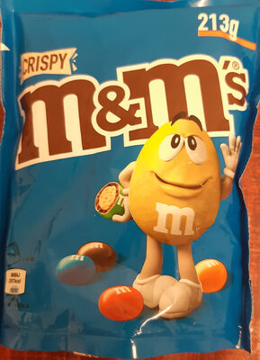
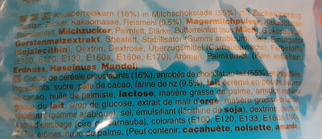

1. Zutatenliste mit Insekten beim Einkauf bereit halten
Um festzustellen, ob ein Produkt, welches Sie gerade in Händen halten, Insekten beinhaltet, lesen Sie die
Zutatenliste
auf der Verpackung und vergleichen Sie die Zutaten mit der folgenden Liste von Insektenzutaten:
- E120
- Schildlaus
- Karmin
- E904
- Schellack
- Tenebrio molitor
- Mehlkäfer
- Mehlwurm
- Locusta migratoria
- Wanderheuschrecke
- Acheta domesticus
- Hausgrille
- Alphitobius diaperinus
- Buffalowurm
- Getreideschimmelkäfer
Haben Sie eine oder mehrere dieser Zutaten auf der Verpackung entdeckt, dann enthält das Produkt Insekten.
Vielleicht lernen Sie diese Liste auch auswendig, damit Sie beim Einkaufen schneller Produkte mit Insekten
erkennen
können.
Beispielsweise könnten Sie die folgende Verpackung der Süßigkeit m&m's in Händen halten:

Auf der Rückseite der Verpackung finden Sie auf der Zutatenliste

die Zutat E120, die auch auf obiger Liste steht. Also enthalten m&m's Insekten.